1.png … 35.png должны лежать в той же папке, что и этот HTML. Если какое-то изображение отсутствует, браузер покажет значок «битой» картинки — остальной текст останется читаемым.Трансформаторы
1. Причины нагрева трансформатора и меры снижения температуры
При работе трансформатора часть электрической энергии, поступающей от источника в первичную обмотку, теряется, превращаясь в теплоту. Нагрев происходит за счёт двух групп потерь. Магнитные потери \(P_{\text{ст}}\) (потери в стали) выделяются в магнитопроводе при его перемагничивании: это потери на гистерезис (энергия, затрачиваемая на переориентацию магнитных доменов при каждом полупериоде) и потери на вихревые токи (токи Фуко, наводимые в толще стали переменным магнитным потоком; для их уменьшения магнитопровод шихтуют — собирают из изолированных тонких листов). Электрические потери \(P_{\text{об}}\) (потери в меди) — это джоулев нагрев проводов обмоток протекающим током. Полные потери:
$$P_{\text{пот}}=P_{\text{ст}}+P_{\text{об}}=P_{\text{г}}+P_{\text{в.т}}+I_1^2R_1+I_2^2R_2$$- \(P_{\text{пот}}\)
- — полные потери мощности в трансформаторе, Вт.
- \(P_{\text{ст}}\)
- — потери в стали (магнитопроводе), Вт; не зависят от тока нагрузки.
- \(P_{\text{об}}\)
- — потери в обмотках (в меди), Вт; пропорциональны квадрату тока.
- \(P_{\text{г}}\)
- — потери на гистерезис, Вт.
- \(P_{\text{в.т}}\)
- — потери на вихревые токи, Вт.
- \(I_1, I_2\)
- — действующие значения токов первичной и вторичной обмоток, А.
- \(R_1, R_2\)
- — активные сопротивления первичной и вторичной обмоток, Ом.
Коэффициент полезного действия:
$$\eta=\frac{P_2}{P_1}=\frac{P_2}{P_2+P_{\text{ст}}+P_{\text{об}}}$$- \(\eta\)
- — КПД трансформатора (безразмерный, часто в %).
- \(P_2\)
- — активная мощность, отдаваемая нагрузке, Вт.
- \(P_1=P_2+P_{\text{пот}}\)
- — активная мощность, потребляемая от источника, Вт.
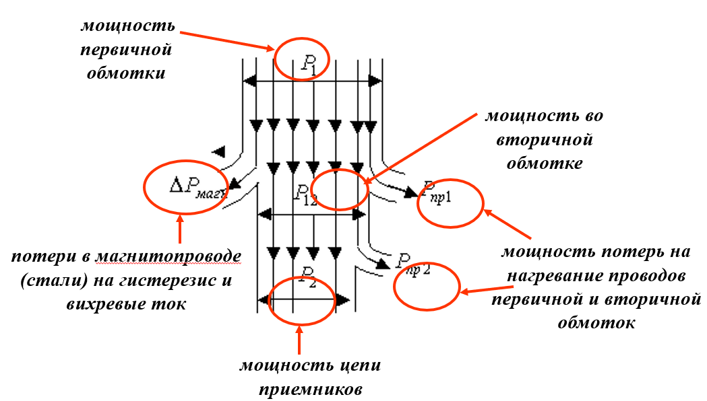
Нагрев зависит не только от величины потерь, но и от теплового сопротивления \(R_{т}\) (°С/Вт):
$$T_n=T_c+\Delta P_V\left(R_{т(п-к)}+R_{т(к-р)}+R_{т(р-с)}\right)$$- \(T_n\)
- — температура перехода (или обмотки), °С.
- \(T_c\)
- — температура окружающей среды, °С.
- \(\Delta P_V\)
- — мощность потерь, рассеиваемая в элементе, Вт.
- \(R_{т(п-к)}\)
- — тепловое сопротивление «переход – корпус», °С/Вт.
- \(R_{т(к-р)}\)
- — тепловое сопротивление «корпус – радиатор», °С/Вт.
- \(R_{т(р-с)}\)
- — тепловое сопротивление «радиатор – среда», °С/Вт.
Меры снижения температуры: стали с малыми удельными потерями, шихтованные и ленточные сердечники, уменьшение плотности тока, радиаторы, принудительная вентиляция, термопрокладки и теплопроводящие мастики. В современных ЭПУ повышают частоту преобразования (с 50 Гц до 100–200 кГц) — масса и габариты трансформатора резко уменьшаются, улучшается охлаждение.
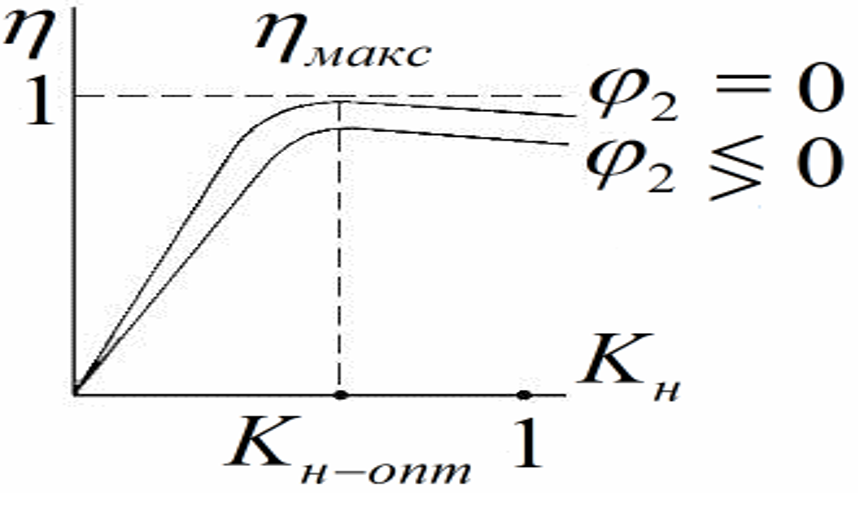
2. Опыты холостого хода и короткого замыкания трансформатора
Оба опыта служат для определения параметров схемы замещения и расчётных характеристик трансформатора без разборки.
Опыт холостого хода (ХХ). К первичной обмотке подводится номинальное напряжение \(U_1=U_{1\text{н}}\), вторичная обмотка разомкнута. Измеряют \(U_{10}\), \(I_{10}\), \(P_{10}\), \(U_{20}\). Так как ток ХХ мал (3–10 % от номинального), потерями в меди можно пренебречь, и мощность \(P_{10}\) практически равна магнитным потерям \(P_{\text{ст}}\). Параметры ветви намагничивания:
$$Z_0=\frac{U_{10}}{I_{10}},\qquad R_0=\frac{P_{10}}{I_{10}^2},\qquad X_0=\sqrt{Z_0^2-R_0^2}$$- \(Z_0\)
- — полное сопротивление ветви намагничивания, Ом.
- \(R_0\)
- — активное сопротивление, эквивалентное потерям в стали, Ом.
- \(X_0\)
- — индуктивное сопротивление намагничивания, Ом.
- \(U_{10}\)
- — напряжение на первичной обмотке в опыте ХХ, В.
- \(I_{10}\)
- — ток холостого хода, А.
- \(P_{10}\)
- — мощность потерь в опыте ХХ (≈ потери в стали), Вт.
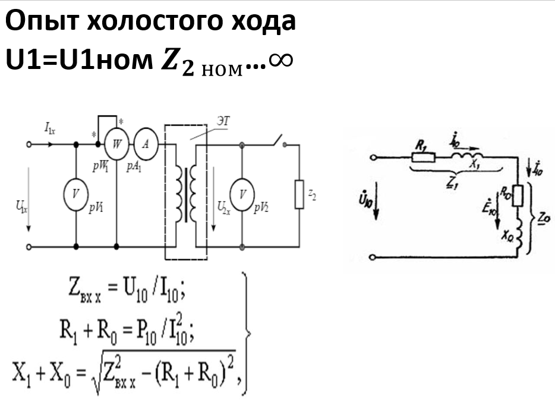
Коэффициент трансформации:
$$n_{21}=\frac{U_{20}}{U_{1\text{н}}}=\frac{W_2}{W_1}$$- \(n_{21}\)
- — коэффициент трансформации (безразмерный).
- \(U_{20}\)
- — напряжение на вторичной обмотке в режиме ХХ, В.
- \(U_{1\text{н}}\)
- — номинальное напряжение первичной обмотки, В.
- \(W_1, W_2\)
- — числа витков первичной и вторичной обмоток.
Опыт короткого замыкания (КЗ). Вторичная обмотка замыкается накоротко, к первичной подводится пониженное напряжение \(U_к\) такое, чтобы токи были номинальными. Магнитный поток мал, поэтому магнитными потерями пренебрегают; \(P_к\) практически равна электрическим потерям в обмотках. Находят:
$$Z_к=\frac{U_к}{I_{1\text{н}}},\qquad R_к=R_1+R_2'=\frac{P_к}{I_{1\text{н}}^2},\qquad X_к=X_1+X_2'=\sqrt{Z_к^2-R_к^2}$$- \(Z_к\)
- — полное сопротивление короткого замыкания, Ом.
- \(R_к\)
- — активная составляющая сопротивления КЗ, Ом.
- \(X_к\)
- — индуктивная составляющая сопротивления КЗ, Ом.
- \(R_1\)
- — активное сопротивление первичной обмотки, Ом.
- \(R_2'=R_2/n_{21}^2\)
- — приведённое активное сопротивление вторичной обмотки, Ом.
- \(X_1, X_2'\)
- — индуктивные сопротивления рассеяния первичной и приведённой вторичной обмоток, Ом.
- \(U_к\)
- — напряжение короткого замыкания, В.
- \(I_{1\text{н}}\)
- — номинальный ток первичной обмотки, А.
- \(P_к\)
- — мощность потерь КЗ (потери в меди), Вт.
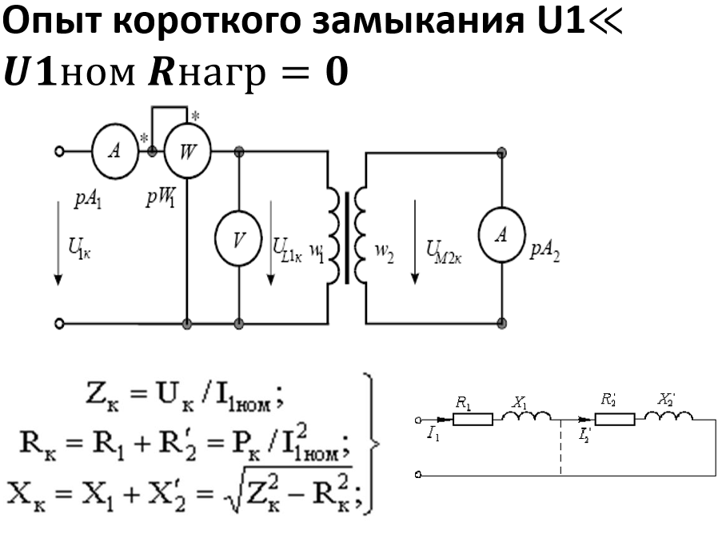
Угол КЗ \(\varphi_к=\arctan(X_к/R_к)\), относительное напряжение КЗ \(u_к=U_к/U_{1\text{н}}\). Почему можно пренебречь потерями: в опыте КЗ магнитный поток мал, \(P_{\text{ст}}\sim U_1^2\) пренебрежимо; в опыте ХХ ток \(I_0\) мал, \(P_{\text{об}}\sim I^2\) пренебрежимо. Где используются данные: \(R_0, X_0, R_к, X_к\) — в схеме замещения; \(u_к, \varphi_к\) — в формуле \(\Delta u=\beta u_к\cos(\varphi_к-\varphi_2)\); \(P_0, P_к\) — в формуле КПД.
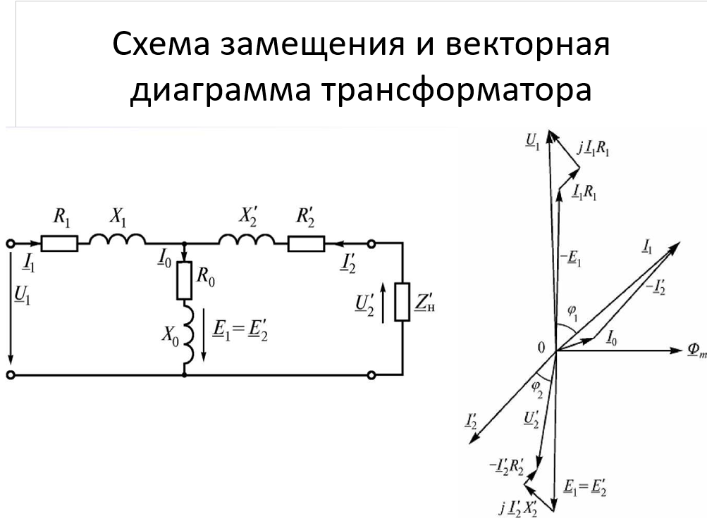
3. Закон Ома для магнитной цепи; конструктивные элементы; первичная и вторичная обмотки
Закон Ома для магнитной цепи является следствием закона полного тока:
$$\oint_l \vec H\,d\vec l=\sum_i i_i$$- \(\vec H\)
- — вектор напряжённости магнитного поля, А/м.
- \(d\vec l\)
- — элемент длины контура, м.
- \(i_i\)
- — токи, охваченные контуром, А.
Для однородного участка магнитной цепи:
$$Hl=W_1 i_1=F,\qquad B=\mu_a H=\mu_0\mu H$$- \(H\)
- — напряжённость магнитного поля, А/м.
- \(l\)
- — длина средней магнитной линии, м.
- \(W_1\)
- — число витков обмотки.
- \(i_1\)
- — ток обмотки, А.
- \(F=W_1i_1\)
- — магнитодвижущая сила (МДС), А.
- \(B\)
- — магнитная индукция, Тл.
- \(\mu_0=4\pi\cdot10^{-7}\)
- — магнитная постоянная, Гн/м.
- \(\mu\)
- — относительная магнитная проницаемость.
Магнитный поток и магнитное сопротивление:
$$\Phi=BS,\qquad \Phi=\frac{F}{R_\mu},\qquad R_\mu=\frac{l}{S\mu_a}$$- \(\Phi\)
- — магнитный поток, Вб.
- \(S\)
- — площадь поперечного сечения магнитопровода, м².
- \(R_\mu\)
- — магнитное сопротивление, 1/Гн.
- \(\mu_a=\mu_0\mu\)
- — абсолютная магнитная проницаемость, Гн/м.
Последнее выражение и есть закон Ома для магнитной цепи: поток прямо пропорционален МДС и обратно пропорционален магнитному сопротивлению.
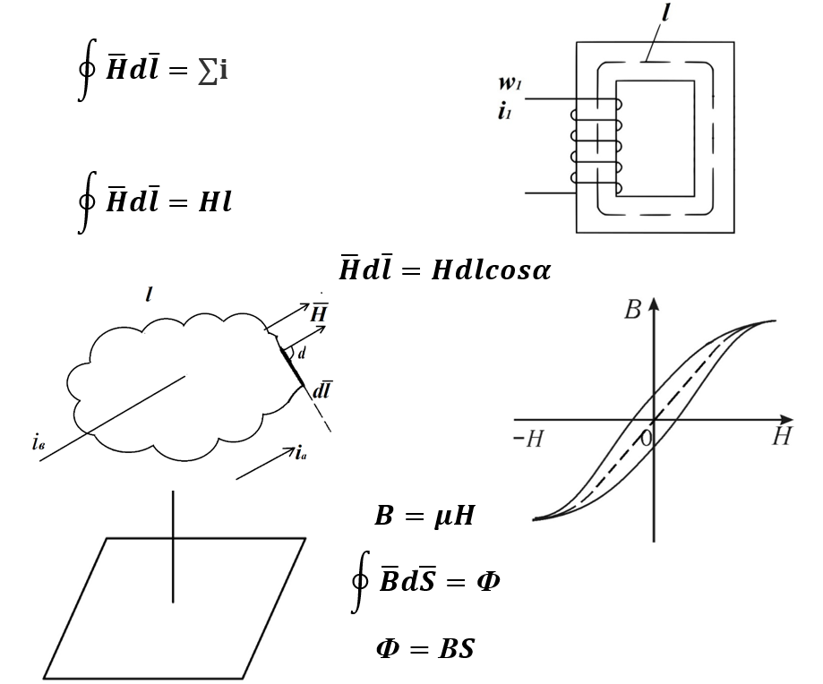
Обоснование конструктивных элементов: магнитопровод из ферромагнитного материала с высокой \(\mu\) даёт малое \(R_\mu\) и большой поток при малой МДС; сечение \(S\) и длина \(l\) выбираются так, чтобы обеспечить нужный поток без насыщения; обмотки создают МДС \(F=W_1i_1\). Первичная обмотка — подключается к источнику, её параметры обозначаются индексом 1 (\(W_1, U_1, I_1\)). Вторичная — к потребителю, индекс 2 (\(W_2, U_2, I_2\)).
4. Требования к трансформатору; характеристики; процентное изменение напряжения
К трансформатору предъявляются требования: высокий КПД; высокий коэффициент мощности; стабильность выходного напряжения при изменении нагрузки; минимальные масса и габариты; надёжность; допустимый нагрев. Степень выполнения оценивается характеристиками.
КПД \(\eta=P_2/P_1\). Коэффициент мощности \(\cos\varphi=P_1/S_{\text{вх}}\), где \(S_{\text{вх}}\) — полная мощность, потребляемая от источника. Коэффициент холостого хода \(I_x=I_{1x}/I_{1\text{н}}\), где \(I_{1x}\) — ток ХХ, \(I_{1\text{н}}\) — номинальный ток первичной обмотки.
Процентное изменение напряжения — падение напряжения на выходе при переходе от холостого хода к номинальной нагрузке:
$$\Delta U\%=\frac{U_{2x}-U_{2\text{н}}}{U_{2x}}\cdot100\%$$- \(\Delta U\%\)
- — процентное изменение напряжения, %.
- \(U_{2x}\)
- — напряжение на вторичной обмотке при холостом ходе, В.
- \(U_{2\text{н}}\)
- — напряжение при номинальной нагрузке, В.
Именно \(\Delta U\%\) характеризует требование стабильности выходного напряжения при изменении нагрузки. Более точное выражение:
$$\Delta u=\beta u_к\cos(\varphi_к-\varphi_2),\qquad U_2=n_{21}U_{1\text{н}}(1-\Delta u)$$- \(\Delta u=\Delta U/U_{1\text{н}}\)
- — относительное изменение напряжения.
- \(\beta=I_2/I_{2\text{н}}\)
- — коэффициент нагрузки.
- \(u_к=U_к/U_{1\text{н}}\)
- — относительное напряжение КЗ.
- \(\varphi_к=\arctan(X_к/R_к)\)
- — угол КЗ, рад.
- \(\varphi_2\)
- — угол нагрузки (положителен при индуктивной нагрузке).
- \(U_2\)
- — напряжение на нагрузке реального трансформатора, В.
- \(n_{21}, U_{1\text{н}}\)
- — коэффициент трансформации и номинальное напряжение первичной обмотки.
В реальном трансформаторе \(\Delta u\) зависит от тока нагрузки \(\beta\), характера нагрузки \(\varphi_2\) и параметров КЗ \(u_к, \varphi_к\); в идеальном \(\Delta u=0\).
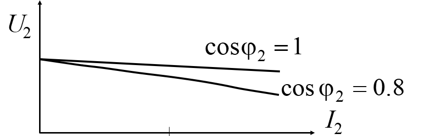
5. Зависимости \(I_1=f(I_2)\), \(\cos\varphi=f(I_2)\), \(\eta=f(I_2)\), \(U_2=f(I_2)\)
Ток первичной обмотки \(I_1=f(I_2)\). По уравнению равновесия МДС:
$$\dot I_1W_1=\dot I_0W_1-\dot I_2W_2$$- \(\dot I_1, \dot I_2, \dot I_0\)
- — комплексные действующие значения токов первичной, вторичной обмоток и тока холостого хода, А.
- \(W_1, W_2\)
- — числа витков первичной и вторичной обмоток.
С ростом \(I_2\) растёт и \(I_1\), практически пропорционально (при \(I_0\ll I_1\)).
Напряжение \(U_2=f(I_2)\).
$$U_2=n_{21}U_{1\text{н}}\left[1-\beta u_к\cos(\varphi_к-\varphi_2)\right]$$- \(U_2\)
- — напряжение на нагрузке, В.
- \(n_{21}\)
- — коэффициент трансформации.
- \(U_{1\text{н}}\)
- — номинальное напряжение первичной обмотки, В.
- \(\beta, u_к, \varphi_к, \varphi_2\)
- — коэффициент нагрузки, относительное напряжение КЗ, угол КЗ, угол нагрузки.
При активно-индуктивной нагрузке напряжение падает; при \(\cos\varphi_2=1\) падение минимально, при \(\cos\varphi_2=0{,}8\) — сильнее; при ёмкостной нагрузке и больших углах напряжение может возрастать.
КПД \(\eta=f(I_2)\).
$$\eta=\frac{\beta S_н\cos\varphi_2}{\beta S_н\cos\varphi_2+P_0+\beta^2P_к}$$- \(\eta\)
- — КПД трансформатора.
- \(S_н\)
- — номинальная полная мощность, В·А.
- \(\beta\)
- — коэффициент нагрузки.
- \(\cos\varphi_2\)
- — коэффициент мощности нагрузки.
- \(P_0\)
- — потери холостого хода (постоянные), Вт.
- \(P_к\)
- — потери короткого замыкания при номинальном токе (переменные, \(\sim\beta^2\)), Вт.
Кривая сначала растёт, достигает максимума при \(\beta_{\max}^2P_к=P_0\) (постоянные потери равны переменным), затем снижается — см. рис. 2.
Коэффициент мощности \(\cos\varphi=f(I_2)\). В реальном трансформаторе зависит от \(I_0\) (индуктивный характер из-за намагничивания) и \(X_1, X_2'\). В идеальном трансформаторе \(I_0=0\), \(R_1=R_2=0\), \(X_1=X_2=0\), поэтому \(\eta=1\), \(\cos\varphi=\cos\varphi_2\), \(U_2=\text{const}\) — зависимости тривиальны.
6. Приведение вторичной обмотки к первичной; Т-образная и упрощённая схемы замещения
Зачем приводят. Реальный трансформатор имеет разные \(W_1, W_2\), обмотки электрически не связаны — нельзя составить единую схему. Приведение позволяет заменить реальный трансформатор эквивалентным с одинаковым числом витков (обычно \(W_1\)).
Условия приведения: 1) равенство электромагнитной мощности; 2) равенство потерь; 3) равенство фазовых сдвигов. Формулы пересчёта:
$$E_2'=\frac{E_2}{n_{21}},\quad I_2'=I_2n_{21},\quad R_2'=\frac{R_2}{n_{21}^2},\quad X_2'=\frac{X_2}{n_{21}^2},\quad Z_н'=\frac{Z_н}{n_{21}^2}$$- \(E_2', I_2'\)
- — приведённые ЭДС (В) и ток (А) вторичной обмотки.
- \(R_2', X_2'\)
- — приведённые активное и индуктивное сопротивления вторичной обмотки, Ом.
- \(Z_н'\)
- — приведённое сопротивление нагрузки, Ом.
- \(n_{21}=W_2/W_1\)
- — коэффициент трансформации.
- \(E_2, I_2, R_2, X_2, Z_н\)
- — реальные (до приведения) значения.
Т-образная схема содержит \(R_1, X_1\) (первичная обмотка), \(R_0, X_0\) (ветвь намагничивания), \(R_2', X_2'\) (приведённая вторичная) и \(Z_н'\) (нагрузка). Система уравнений:
$$\dot U_1=-\dot E_1+\dot I_1(R_1+jX_1),\quad \dot I_1=\dot I_0-\dot I_2',\quad \dot U_2'=\dot E_2'-\dot I_2'(R_2'+jX_2')$$- \(\dot U_1\)
- — комплексное напряжение первичной обмотки, В.
- \(\dot E_1, \dot E_2'\)
- — комплексные ЭДС первичной и приведённой вторичной обмоток, В.
- \(\dot I_1, \dot I_2', \dot I_0\)
- — комплексные токи первичной, приведённой вторичной обмоток и холостого хода, А.
- \(\dot U_2'\)
- — приведённое напряжение на нагрузке, В.
Упрощённая схема получается при \(I_0\approx0\):
$$Z_{эк}=Z_1+Z_2'+Z_н',\qquad \dot U_2'=\dot U_{1\text{н}}-\dot I_1(R_к+jX_к)$$- \(Z_{эк}\)
- — эквивалентное сопротивление всей цепи, Ом.
- \(Z_1=R_1+jX_1,\ Z_2'=R_2'+jX_2'\)
- — сопротивления обмоток, Ом.
- \(R_к=R_1+R_2',\ X_к=X_1+X_2'\)
- — параметры КЗ, Ом.
- \(\dot U_{1\text{н}}\)
- — номинальное напряжение первичной обмотки, В.
Схема используется для векторной диаграммы и расчёта внешней характеристики. См. рис. 5.
7. Что и почему изменяется в схеме замещения при негармоническом напряжении
Из закона электромагнитной индукции:
$$B(t)=\frac{1}{W_1S_{\text{ст}}}\int u_1(t)\,dt$$- \(B(t)\)
- — мгновенное значение магнитной индукции, Тл.
- \(u_1(t)\)
- — мгновенное значение напряжения первичной обмотки, В.
- \(W_1\)
- — число витков первичной обмотки.
- \(S_{\text{ст}}\)
- — площадь сечения стержня магнитопровода, м².
Если \(u_1\) не синусоидально, \(B(t)\) содержит высшие гармоники. Нельзя пользоваться одним \(X=\omega L\): для каждой гармоники \(k\) сопротивление \(X_k=k\omega L\), а \(R_0, X_0\) и потери \(P_{\text{ст}}\sim U_1^2\) зависят от частоты. Схема замещения рассчитывается по гармоникам: \(u_1(t)\) раскладывают в ряд Фурье, для каждой гармоники строят свою схему, затем суммируют токи и напряжения.
8. Достоинства и недостатки автотрансформатора
Автотрансформатор — трансформатор, у которого обмотки имеют непосредственную электрическую связь: часть витков первичной обмотки используется как вторичная. Номинальная (проходная) мощность:
$$S_н=U_{вн}I_{вн}=(U_1+U_2)I_2=U_1I_2+U_2I_2$$- \(S_н\)
- — номинальная (проходная) мощность, В·А.
- \(U_{вн}\)
- — высшее (входное) напряжение, В.
- \(I_{вн}\)
- — ток нагрузки (входной ток), А.
- \(U_1, U_2\)
- — напряжения на общей и добавочной частях обмотки, В.
- \(I_2\)
- — ток вторичной цепи, А.
Первое слагаемое \(U_1I_2\) передаётся электрически, второе \(U_2I_2\) — электромагнитно. Доля электромагнитной мощности:
$$\frac{S_{эм}}{S_н}\approx\frac{K_{тр}-1}{K_{тр}}=\frac{n_{21}}{1+n_{21}}$$- \(S_{эм}\)
- — электромагнитная мощность, В·А.
- \(K_{тр}=U_{вн}/U_{нн}\)
- — коэффициент трансформации по напряжению.
- \(n_{21}=W_2/W_1\)
- — отношение чисел витков добавочной и общей частей.
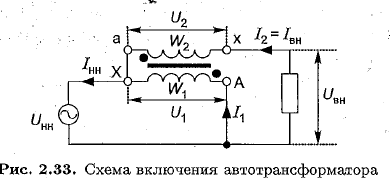
Достоинства: при \(K_{тр}\to1\) меньше масса, габариты, потери и \(\Delta u\) по сравнению с обычным трансформатором той же мощности. Недостатки: гальваническая связь обмоток; в телекоммуникациях часто нужно заземлять полюс нагрузки, поэтому автотрансформатор не всегда применим; при КЗ вторичной цепи в сеть попадает полное напряжение первичной, что опасно.
Выпрямительные устройства
9. Структурная схема ВУ; без каких элементов возможна цель; отличия вентилей
Выпрямительное устройство (ВУ) — статическое устройство, преобразующее энергию переменного тока в энергию постоянного тока. Структурная схема содержит три основных элемента: трансформатор Т — преобразует уровень напряжения и обеспечивает гальваническую развязку; вентильный блок ВБ — диоды или тиристоры, преобразующие переменное напряжение в однополярное пульсирующее; сглаживающий фильтр СФ — фильтр нижних частот, уменьшающий пульсации.
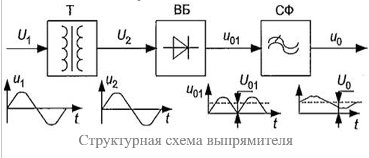
Без каких элементов можно обойтись. Обязателен вентильный блок. Трансформатор можно исключить, если напряжение сети соответствует требуемому и не нужна гальваническая развязка (современные ВВВ). СФ можно исключить, если допустимы пульсации (в трёхфазной мостовой \(p=6\), \(K_{п(1)}=0{,}057\)).
Отличия вентилей. Диод — неуправляемый, открывается автоматически при прямом напряжении. Тиристор — управляемый, открывается импульсом на управляющий электрод, закрывается при снижении тока до нуля; позволяет регулировать среднее напряжение. При выборе диода: \(I_{\text{в.ср}}
10. Статические и динамические потери в диодах
Статические потери:
$$P_{\text{ст}}=P_{\text{пр}}+P_{\text{обр}},\qquad P_{\text{пр}}\gg P_{\text{обр}}$$- \(P_{\text{ст}}\)
- — полные статические потери, Вт.
- \(P_{\text{пр}}\)
- — потери от прямого тока, Вт.
- \(P_{\text{обр}}\)
- — потери от обратного тока, Вт (малы).
При кусочно-линейной аппроксимации ВАХ:
$$P_{\text{ст}}\approx P_{\text{пр}}=\frac1T\int_0^{t_н}i_{\text{пр}}u_{\text{пр}}\,dt=I_{\text{пр}}U_0+I_{\text{пр}}^2R_{\text{диф}}$$- \(T\)
- — период переключения, с.
- \(t_н\)
- — интервал открытого состояния, с.
- \(i_{\text{пр}}, u_{\text{пр}}\)
- — мгновенные прямой ток (А) и напряжение (В).
- \(I_{\text{пр}}\)
- — средний прямой ток, А.
- \(U_0\)
- — пороговое напряжение (0,7–0,9 В; 0,35–0,45 В для Шоттки), В.
- \(R_{\text{диф}}\)
- — дифференциальное сопротивление, Ом.
Динамические потери:
$$P_{\text{дин}}\approx P_{\text{выкл}}\approx fK I_{\text{пр}}U_{\text{обр}}\tau_{\text{выкл}}$$- \(f\)
- — частота переключения, Гц.
- \(K\)
- — коэффициент формы (1/3…2/3).
- \(I_{\text{пр}}, U_{\text{обр}}\)
- — прямой ток (А) и обратное напряжение (В).
- \(\tau_{\text{выкл}}\)
- — время выключения, с.
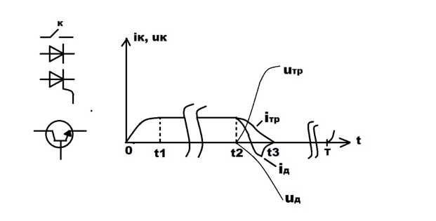
Дополнительные потери из-за паразитной индуктивности: \(P_{\text{доп}}=0{,}5L_1I_{\text{обр.max}}^2/T\), где \(L_1\) — паразитная индуктивность (Гн); \(I_{\text{обр.max}}\) — максимальный обратный ток (А).
11. Требования к схемам ВУ и характеристики оценки
Требования: высокий уровень преобразования; малое обратное напряжение на вентилях; малые пульсации; хорошее использование трансформатора; надёжность; приемлемые масса и габариты. Четыре показателя качества (ПК1–ПК4):
$$\text{ПК}_1=\frac{U_0}{U_2},\quad \text{ПК}_2=\frac{U_{\text{обр}}}{U_0},\quad \text{ПК}_3=K_{п1}=\frac{U_{m1}}{U_0},\quad \text{ПК}_4=K_{\text{им}}=\frac{P_0}{P_{\text{т}}}$$- \(\text{ПК}_1=U_0/U_2\)
- — коэффициент преобразования по напряжению: доля действующего напряжения вторичной обмотки, превращаемая в постоянное. Чем больше, тем лучше.
- \(U_0\)
- — средневыпрямленное (постоянное) напряжение на нагрузке, В.
- \(U_2\)
- — действующее напряжение вторичной обмотки (до вентильного блока), В.
- \(\text{ПК}_2=U_{\text{обр}}/U_0\)
- — коэффициент по обратному напряжению: во сколько раз максимальное обратное напряжение на вентиле превышает \(U_0\). Чем меньше, тем лучше.
- \(U_{\text{обр}}\)
- — максимальное обратное напряжение на закрытом вентиле, В.
- \(\text{ПК}_3=K_{п1}=U_{m1}/U_0\)
- — коэффициент пульсаций по первой гармонике: доля амплитуды первой гармоники от постоянной составляющей. Чем меньше, тем лучше.
- \(U_{m1}\)
- — амплитуда первой гармоники пульсаций, В.
- \(\text{ПК}_4=K_{\text{им}}=P_0/P_{\text{т}}\)
- — коэффициент использования трансформатора: доля габаритной мощности, полезно используемая в нагрузке. Чем ближе к 1, тем лучше.
- \(P_0=U_0I_0\)
- — мощность в нагрузке, Вт.
- \(P_{\text{т}}\)
- — габаритная (типовая) мощность трансформатора, В·А.
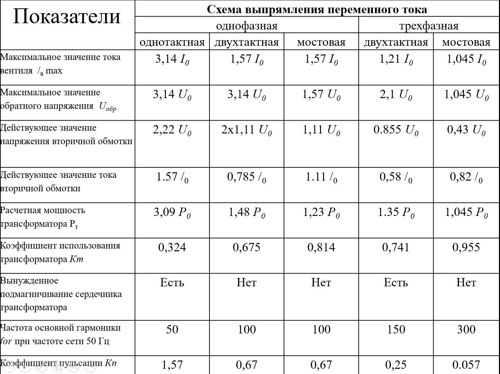
12. Математический аппарат; отличие однотактных и двухтактных \(m\)-фазных схем
Математический аппарат: интегрирование мгновенных значений за период для средних \(U_0=\frac1T\int u_0dt\) и действующих \(U=\sqrt{\frac1T\int u^2dt}\); ряд Фурье для гармоник пульсаций; векторные диаграммы; кусочно-линейная аппроксимация ВАХ.
Число фаз выпрямления:
$$p=m_2 n K_к$$- \(p\)
- — число фаз выпрямления (число пульсаций за период сети).
- \(m_2\)
- — число фаз вторичной обмотки.
- \(n\)
- — число тактов: \(n=1\) — однотактная, \(n=2\) — двухтактная (мостовая).
- \(K_к\)
- — коэффициент каскадности (1 для простых схем).
Отличия однотактных и двухтактных схем. В однотактных ток во вторичной обмотке идёт только в одном направлении, поэтому:
$$I_{2\text{ср}}=\frac{nI_0}{p}(2-n)$$- \(I_{2\text{ср}}\)
- — постоянная составляющая тока фазы вторичной обмотки, А.
- \(I_0\)
- — ток нагрузки, А.
- \(n\)
- — число тактов.
- \(p\)
- — число фаз выпрямления.
При \(n=1\): \(I_{2\text{ср}}=I_0/p\) — вынужденное подмагничивание сердечника (постоянный поток → насыщение → рост намагничивающего тока). При \(n=2\): \(I_{2\text{ср}}=0\) — подмагничивания нет, трансформатор используется лучше. Отсюда разные расчётные соотношения для \(S_т, I_2, U_{\text{обр}}, K_{п1}\).
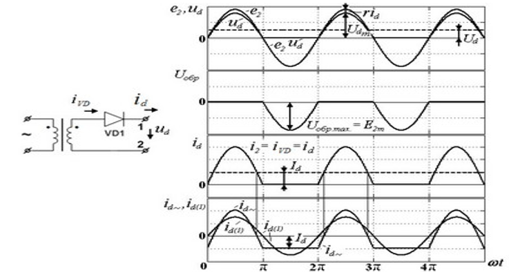
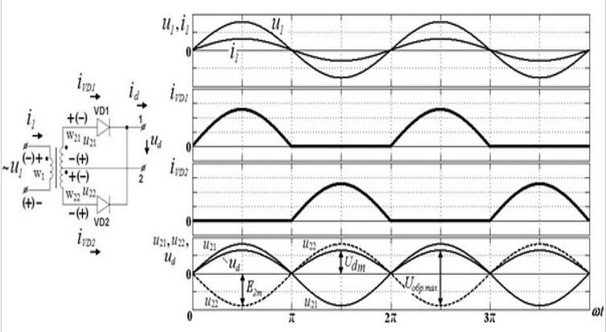
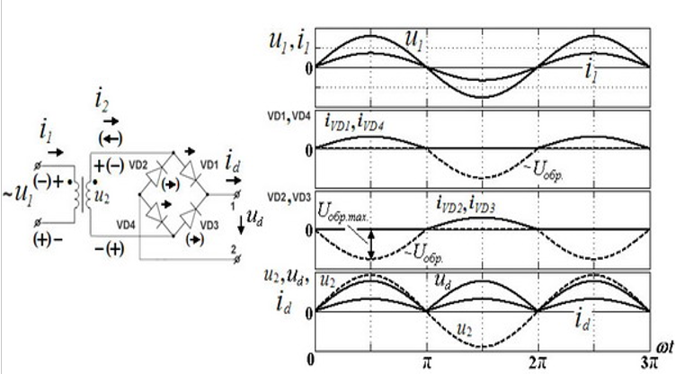
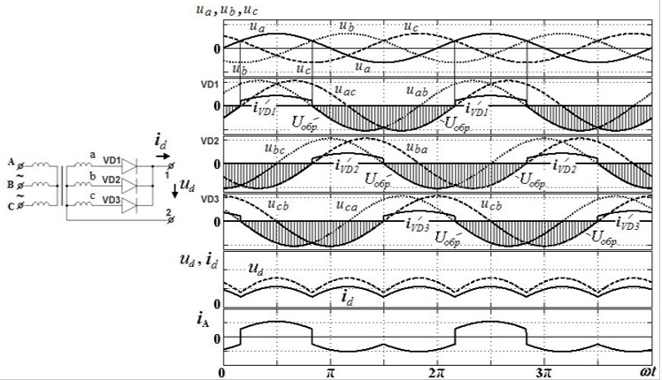
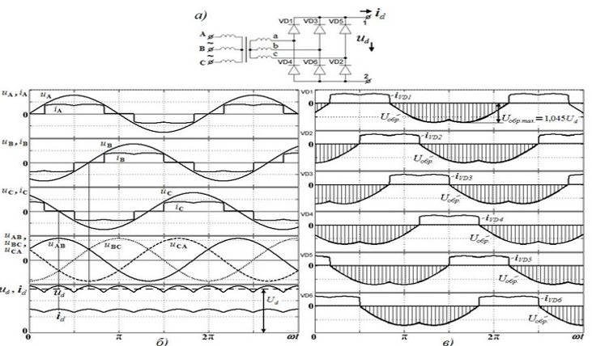
13. Допущения при анализе активно-индуктивной нагрузки; влияние индуктивности
Допущения: вентили и трансформатор идеальны; \(L\to\infty\), ток непрерывен; падение на вентилях нулевое; активное сопротивление дросселя нулевое.
Критическая индуктивность:
$$L_{кр}=\frac{2E_0}{p(p^2-1)\omega_1 I_{0\min}}$$- \(L_{кр}\)
- — критическая индуктивность, Гн.
- \(E_0\)
- — среднее напряжение идеального выпрямителя, В.
- \(p\)
- — число фаз выпрямления.
- \(\omega_1=2\pi f_1\)
- — круговая частота сети, рад/с.
- \(I_{0\min}\)
- — минимальный ток нагрузки, А.
Влияние индуктивности рассеяния \(L_к\) и активного сопротивления \(R_a\):
$$U_{01}=E_0-I_0\frac{px_к}{2\pi},\qquad x_к=\omega_1L_к$$- \(U_{01}\)
- — среднее напряжение на выходе реального выпрямителя, В.
- \(I_0\)
- — ток нагрузки, А.
- \(x_к=\omega_1L_к\)
- — индуктивное сопротивление КЗ, Ом.
- \(L_к\)
- — индуктивность рассеяния фазы трансформатора, Гн.
С учётом активного сопротивления:
$$U_{01}=E_0-I_0\left(R_a+\frac{px_к}{2\pi}\right),\qquad R_a=R_к+\left(R_{VD}+\frac{U_п}{I_0}\right)$$- \(R_a\)
- — суммарное активное сопротивление фазы (трансформатор + диод), Ом.
- \(R_к\)
- — активное сопротивление обмоток трансформатора, Ом.
- \(R_{VD}\)
- — дифференциальное сопротивление диода, Ом.
- \(U_п\)
- — пороговое напряжение диода, В.
Для мостовых схем \(R_a=R_к+2(R_{VD}+U_п/I_0)\) — ток проходит через два диода.
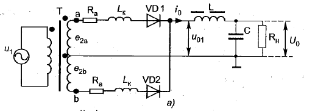
14. Угол отсечки при активно-ёмкостной нагрузке
При активно-ёмкостной нагрузке первым элементом фильтра является конденсатор большой ёмкости. Вентиль открыт только когда ЭДС превышает напряжение на конденсаторе — ток имеет вид коротких импульсов; угол отсечки \(\theta\) (половина угла проводимости) зависит от параметров. При малых пульсациях:
$$U_0=E_{2m}\cos\theta,\qquad A=\tan\theta-\theta=\frac{\pi R}{pR_н}$$- \(U_0\)
- — среднее напряжение на нагрузке, В.
- \(E_{2m}\)
- — амплитуда ЭДС вторичной обмотки, В.
- \(\theta\)
- — половина угла отсечки, рад.
- \(A\)
- — расчётный коэффициент, связанный с \(\theta\).
- \(R\)
- — суммарное активное сопротивление цепи, Ом.
- \(R_н\)
- — сопротивление нагрузки, Ом.
- \(p\)
- — число фаз выпрямления.
Действующее и амплитудное значения токов:
$$I_2=\frac{\sqrt{n}I_0}{p}D,\qquad I_{2m}=\frac{I_0}{p}F$$- \(I_2, I_{2m}\)
- — действующее (А) и амплитудное (А) значения тока вторичной обмотки.
- \(I_0\)
- — средний ток нагрузки, А.
- \(n\)
- — число тактов.
- \(D=D(A), F=F(A)\)
- — коэффициенты, зависящие от \(\theta\).
Коэффициент пульсаций:
$$K_{п(1)}=\frac{U_{0m(1)}}{U_0}=\frac{H}{RC}$$- \(K_{п(1)}\)
- — коэффициент пульсаций по первой гармонике.
- \(U_{0m(1)}\)
- — амплитуда первой гармоники, В.
- \(H=H(A)\)
- — коэффициент, зависящий от \(\theta\).
- \(R, C\)
- — активное сопротивление цепи (Ом) и ёмкость (Ф).
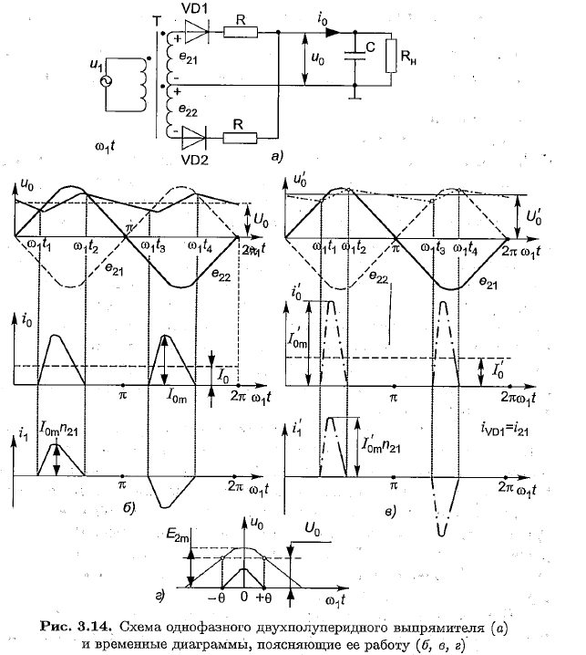
Влияние отсечки: при уменьшении \(\theta\) растут \(I_2, I_{2m}\), потери в трансформаторе и диодах, падает КПД, растут пусковые токи, снижается коэффициент мощности. ГОСТ рекомендует применять этот режим только при мощности до 600 Вт.
15. Внешние характеристики ВУ при разных нагрузках
Внешняя характеристика — \(U_0\) от \(I_0\) при неизменном напряжении сети. Общее выражение:
$$U_{01}=E_0-I_0\left(R_a+\frac{px_к}{2\pi}\right)$$- \(U_{01}\)
- — среднее напряжение реального выпрямителя, В.
- \(E_0\)
- — среднее напряжение идеального выпрямителя, В.
- \(I_0\)
- — ток нагрузки, А.
- \(R_a, x_к\)
- — активное сопротивление фазы (Ом) и индуктивное сопротивление КЗ (Ом).
- \(p\)
- — число фаз выпрямления.
Активная нагрузка: кривая \(u_{01}\) без отрицательных участков, почти линейное падение за счёт \(R_a\). Активно-индуктивная: появляются отрицательные участки, \(U_0\) снижается на \(I_0px_к/(2\pi)\); при малом токе — разрывный режим, характеристика отклоняется вверх. Активно-ёмкостная: конденсатор поддерживает напряжение при малом токе, с ростом \(I_0\) характеристика круто падает; описывается через \(\cos\theta=f(\gamma_0)\), где \(\gamma_0=I_0R/(pE_{2m})\). Включение нулевого диода в управляемом выпрямителе убирает отрицательные участки.
См. также рис. 17 (реальный выпрямитель) и рис. 18 (ёмкостная нагрузка).
16. Среднее напряжение управляемого ВУ при разных нагрузках
Тиристор открывается с задержкой на угол \(\alpha\) от момента естественной коммутации. Среднее напряжение зависит от характера нагрузки.
Активная нагрузка:
$$U_{0\alpha}=\frac1\pi\int_\alpha^\pi U_{2m}\sin\omega t\,d\omega t=U_0\frac{1+\cos\alpha}{2}$$- \(U_{0\alpha}\)
- — среднее напряжение при угле \(\alpha\), В.
- \(U_{2m}\)
- — амплитуда вторичного напряжения, В.
- \(\alpha\)
- — угол управления (задержка открытия), рад.
- \(U_0\)
- — среднее напряжение при \(\alpha=0\), В.
Диапазон регулирования \(0\ldots\pi\).
Активно-индуктивная нагрузка (непрерывный ток):
$$U_{0\alpha}=U_0\cos\alpha$$Диапазон \(0\ldots\pi/2\); при \(\alpha>\pi/2\) — отрицательные участки, возможен инверторный режим.
С нулевым (обратным) диодом:
$$U_{0\alpha}=U_0\frac{1+\cos\alpha}{2}$$Диапазон \(0\ldots\pi\). Коэффициент мощности \(\chi(\alpha)=\chi\cos\alpha\); при глубоком регулировании \(\chi\) падает до \(0{,}3\ldots0{,}5\) — главный недостаток.
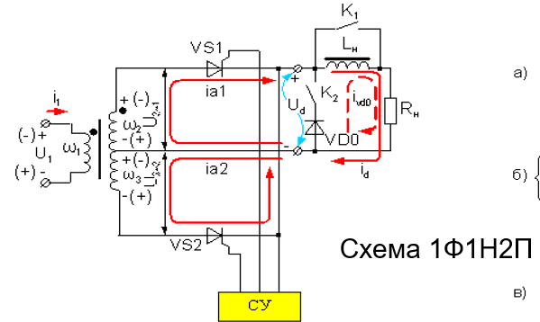
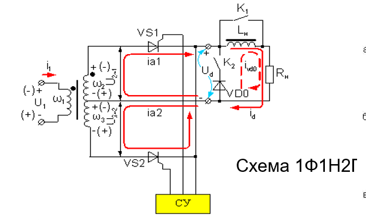
17. Функции реактора и конденсатора; схемные решения для индуктивности
Реактор \(L_P\): сглаживает пульсации тока, запасает энергию, поддерживает ток в паузах (непрерывность), при \(L_P>L_{кр}\) обеспечивает проводимость тиристора ровно половину периода:
$$L_P>L_{кр}=\frac{R_н}{\omega_P}\tan\alpha$$- \(L_P\)
- — индуктивность реактора, Гн.
- \(L_{кр}\)
- — критическая индуктивность, Гн.
- \(R_н\)
- — сопротивление нагрузки, Ом.
- \(\omega_P=2\pi f_P\)
- — круговая частота пульсаций, рад/с.
- \(\alpha\)
- — максимальный угол регулирования, рад.
Конденсатор \(C\): параллельно нагрузке, запасает заряд и сглаживает напряжение.
Вредное влияние индуктивности: обратный выброс ЭДС самоиндукции при размыкании тиристора; отрицательные участки при активно-индуктивной нагрузке без нулевого диода. Решения: нулевой (обратный) диод \(VD_0\); \(L_P>L_{кр}\); демпфирующие RC-цепочки; LC-фильтр.
См. рис. 19, 20.
18. Два принципа сглаживания пульсаций; классификация СФ
СФ — фильтр нижних частот. Два принципа: индуктивный (дроссель последовательно препятствует изменению тока) и ёмкостный (конденсатор параллельно препятствует изменению напряжения).
Классификация: по элементам — \(L, C, LC, RC\); по числу звеньев — однозвенные и многозвенные; по свойствам — обычные (Г- и П-образные) и резонансные (режекторные); по принципу действия — пассивные и активные.
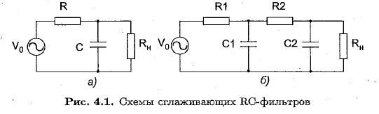
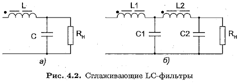
19. Допущения при расчёте СФ; максимум коэффициента сглаживания резонансных СФ
Допущения: элементы линейны; ток дросселя непрерывен; пульсации малы; учитывается только первая гармоника. Для LC-фильтра:
$$q(n)=k_\phi(n)=\sqrt{\frac{[1-(n\omega_n)^2LC]^2+(n\omega_nL/R_н)^2}{R_н}}$$- \(q(n)\)
- — коэффициент сглаживания по \(n\)-й гармонике.
- \(k_\phi(n)\)
- — коэффициент фильтрации по \(n\)-й гармонике.
- \(\omega_n\)
- — круговая частота пульсаций, рад/с.
- \(L, C\)
- — индуктивность (Гн) и ёмкость (Ф).
- \(R_н\)
- — сопротивление нагрузки, Ом.
- \(n\)
- — номер гармоники.
При \(\omega_0=1/\sqrt{LC}\ll\omega_n\): \(q(n)\approx n^2(\omega_n/\omega_0)^2\) — сглаживание растёт как квадрат номера гармоники. В резонансных фильтрах контур настраивают в резонанс на частоту пульсаций: параллельный LC имеет очень большое сопротивление, коэффициент передачи близок к нулю — сглаживание максимально при точной настройке. При уходе частоты или старении элементов эффект падает — поэтому на практике такие фильтры редки.
См. рис. 22.
20. Перенапряжения и сверхтоки в Г-образном LC-фильтре
LC-фильтр — колебательный контур 2-го порядка. Параметры:
$$\rho=\sqrt{L/C},\qquad \omega_0=1/\sqrt{LC},\qquad Q=R_н/\rho$$- \(\rho\)
- — характеристическое сопротивление, Ом.
- \(L, C\)
- — индуктивность (Гн) и ёмкость (Ф).
- \(\omega_0\)
- — собственная частота, рад/с.
- \(Q\)
- — добротность.
- \(R_н\)
- — сопротивление нагрузки, Ом.
Выброс напряжения при скачке входного:
$$\delta_u(Q)\approx\exp\left(-\frac{\pi}{2Q}\right)$$Выброс тока дросселя: \(\delta_I(Q)\approx0{,}996Q-0{,}738\). При \(Q=2\) выбросы напряжения >40 %, тока >100 %. При скачке тока нагрузки:
$$\delta_{uI}(Q_2,k_I)\approx\frac{k_I-1}{Q_2}\exp\left[-\frac{\arctan(2Q_2)}{2Q_2}\right]$$- \(\delta_{uI}\)
- — относительный выброс (или провал) напряжения.
- \(k_I=I_1/I_2\)
- — кратность изменения тока.
- \(Q_2\)
- — добротность после изменения нагрузки.
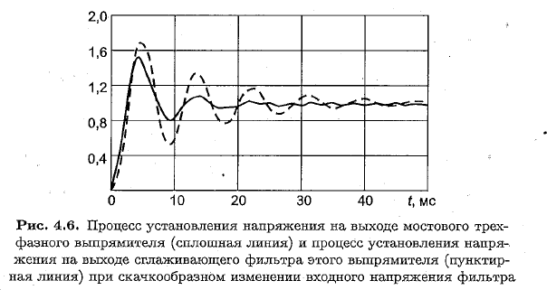
Снижение выбросов: демпфирующие RC, «плавный пуск», ограничение \(di/dt\), выбор \(Q\le2\).
Преобразователи
21. Структурная схема преобразователя постоянного напряжения
Преобразователь постоянного напряжения (конвертор, DC/DC) — устройство, преобразующее постоянное напряжение одного уровня в другое. Типовая схема: сетевой фильтр → входной выпрямитель → ККМ → входной фильтр → инвертор → ВЧ-трансформатор → выходной выпрямитель → выходной фильтр → нагрузка. Обратная связь по выходному напряжению.
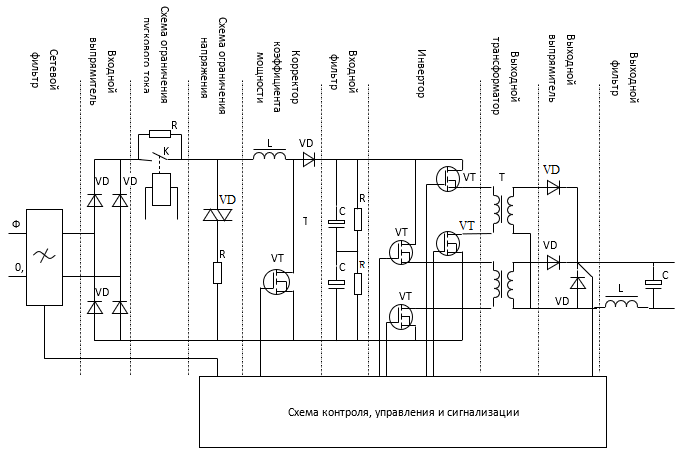
Функции: входной выпрямитель — переменное → постоянное 350–400 В; ККМ — \(\cos\varphi\approx1\); инвертор — постоянное → ВЧ-переменное (для уменьшения массы трансформатора); трансформатор — гальваническая развязка и изменение уровня; выходной выпрямитель и фильтр — стабилизированное постоянное.
Без каких элементов возможно. Без трансформатора — если не нужна развязка и не нужно менять уровень (схемы ПН/ПВ/ПИ). Без выходного фильтра — если допустимы пульсации. Обязательны: инвертор (ключ) и выпрямитель (диод).
22. Влияние характера нагрузки на 2-звенный ППН; снижение потерь
Характер нагрузки влияет на: 1) непрерывность тока в индуктивных элементах; 2) величину реактивной энергии; 3) длительность коммутации; 4) динамические потери. При активно-ёмкостной — большие импульсные и пусковые токи; при активно-индуктивной — обратные выбросы напряжения на ключах.
Снижение потерь: «мягкая коммутация» (ZCS/ZVS), резонансные инверторы, оптимальная частота, малоомные MOSFET/IGBT и быстрые диоды Шоттки, демпфирующие RC.
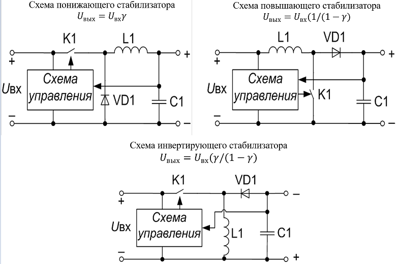
Стабилизаторы напряжения и тока
23. Балластный резистор в параметрическом стабилизаторе на стабилитроне
ПСН содержит стабилитрон (нелинейный элемент) и балластный резистор \(R_Б\) (линейный). Стабилитрон поддерживает \(U_{\text{ст}}\), \(R_Б\) «гасит» изменение \(U_{\text{вх}}\). Расчёт:
$$R_Б=\frac{U_{0\text{вх}}-U_{\text{ст}}}{I_{\text{вх}}},\qquad I_{\text{вх}}=I_н+I_{\text{ст}}$$- \(R_Б\)
- — сопротивление балластного резистора, Ом.
- \(U_{0\text{вх}}\)
- — входное нестабилизированное напряжение, В.
- \(U_{\text{ст}}\)
- — напряжение стабилизации, В.
- \(I_{\text{вх}}\)
- — входной ток, А.
- \(I_н\)
- — ток нагрузки, А.
- \(I_{\text{ст}}\)
- — ток стабилитрона, А.
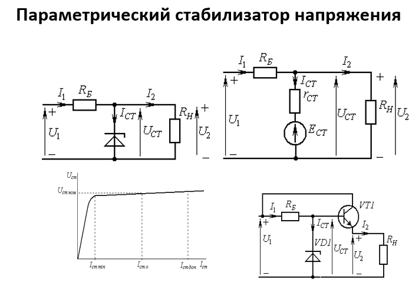
Показатели:
$$K_{ст}=\frac{R_Б}{r_{\text{диф.ст}}}\cdot\frac{U_{0н}}{U_{0вх}}\le30,\qquad R_{\text{вых}}=r_{\text{диф.ст}},\qquad \eta\approx0{,}3$$- \(K_{ст}\)
- — коэффициент стабилизации.
- \(r_{\text{диф.ст}}\)
- — дифференциальное сопротивление стабилитрона, Ом.
- \(U_{0н}, U_{0вх}\)
- — номинальные выходное и входное напряжения, В.
- \(R_{\text{вых}}\)
- — выходное сопротивление, Ом.
- \(\eta\)
- — КПД.
Достоинства: простота, малые габариты, надёжность. Недостатки: низкий КПД, ограниченный диапазон, зависимость от стабилитрона. Для повышения точности — многокаскадные или мостовые схемы с термокомпенсацией.
24. Требования к стабилизаторам и характеристики оценки
- Коэффициент стабилизации \(K_{ст}=\frac{\Delta U_{\text{вх}}}{\Delta U_{\text{вых}}}\cdot\frac{U_{\text{вых}}}{U_{\text{вх}}}\) — во сколько раз уменьшается изменение выходного напряжения.
- Внутреннее сопротивление \(r_i=\frac{\Delta U_{\text{вых}}}{\Delta I_н}\) при \(U_{\text{вх}}=\text{const}\).
- Коэффициент сглаживания пульсаций \(q=\frac{U_{\text{вх}\sim}}{U_{\text{вых}\sim}}\).
- Температурный коэффициент \(\gamma=\frac{\Delta U_{\text{вых}}}{\Delta t_{\text{окр}}}\).
- КПД \(\eta=P_{\text{вых}}/P_{\text{вх}}\).
- Мощность на РЭ \(P_{\text{рэ}}\).
- Удельные: \(P_{\text{вых}}/V_{\text{ст}}\) (Вт/дм³) и \(P_{\text{вых}}/G_{\text{ст}}\) (Вт/кг).
- \(\Delta U_{\text{вх}}, \Delta U_{\text{вых}}\)
- — приращения входного и выходного напряжений, В.
- \(U_{\text{вх}}, U_{\text{вых}}\)
- — номинальные входное и выходное напряжения, В.
- \(\Delta I_н\)
- — приращение тока нагрузки, А.
- \(U_{\text{вх}\sim}, U_{\text{вых}\sim}\)
- — амплитуды пульсаций, В.
- \(\Delta t_{\text{окр}}\)
- — приращение температуры, °С.
- \(P_{\text{вых}}, P_{\text{вх}}\)
- — активные мощности на выходе и входе, Вт.
- \(V_{\text{ст}}, G_{\text{ст}}\)
- — объём (дм³) и масса (кг).
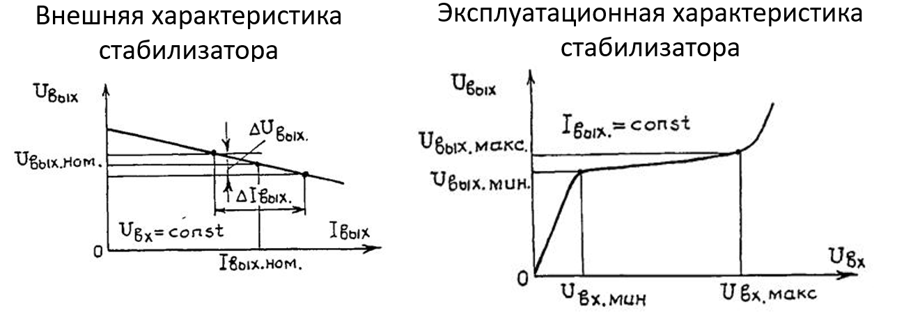
25. Стабилизация в ИСН ПН, ПВ, ПИ; релейное и ШИМ-управление
- ПН: \(U_{\text{вых}}=U_{\text{вх}}\gamma\) — понижающий.
- ПВ: \(U_{\text{вых}}=U_{\text{вх}}/(1-\gamma)\) — повышающий.
- ПИ: \(U_{\text{вых}}=U_{\text{вх}}\gamma/(1-\gamma)\) — инвертирующий.
- \(U_{\text{вых}}, U_{\text{вх}}\)
- — выходное и входное напряжения, В.
- \(\gamma=t_и/T\)
- — коэффициент заполнения.
- \(t_и\)
- — длительность импульса, с.
- \(T\)
- — период переключения, с.
Стабилизация: при росте \(U_{\text{вх}}\) \(\gamma\) уменьшается, при снижении — увеличивается.
ШИМ vs релейное. ШИМ: \(T=\text{const}\), \(t_и=\text{var}\) — постоянная частота, проще фильтрация. Релейное: \(t_п=\text{const}\), \(T_{\text{пр}}=\text{var}\) — частота пульсаций зависит от дестабилизирующего фактора, но проще реализация.
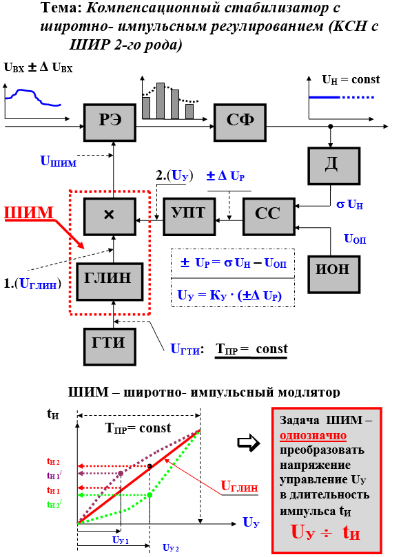
26. Функция регулирующего элемента в непрерывном КСН; составной транзистор
КСН содержит регулирующий элемент (РЭ) и цепь ООС. РЭ работает как регулируемый делитель:
$$U_н=U_{\text{вх}}\pm\Delta U_{\text{вх}}-\Delta U_{кэ}=\text{const}$$- \(U_н\)
- — напряжение на нагрузке, В.
- \(U_{\text{вх}}\)
- — входное напряжение, В.
- \(\Delta U_{\text{вх}}\)
- — отклонение входного напряжения, В.
- \(\Delta U_{кэ}\)
- — падение на транзисторе (коллектор–эмиттер), В.
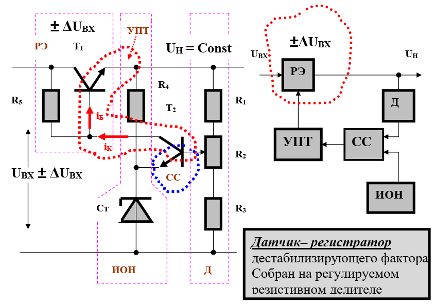
Составной транзистор (Дарлингтон) применяется при большом токе нагрузки и малом \(B\) мощного транзистора. Коэффициент передачи составного \(B_э=B_1B_2\). Число транзисторов определяется током, усилением, рассеиваемой мощностью, напряжением.
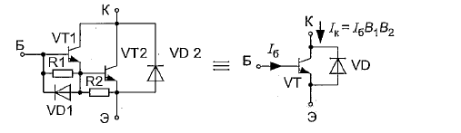
27. Функции диода Д в ПН, ПВ, ПИ; элементы СФ
Во всех трёх схемах диод \(Д\) — обратный (свободный): обеспечивает путь току дросселя при разомкнутом ключе и возвращает накопленную энергию в нагрузку.
- ПН: при замкнутом ключе диод заперт входным напряжением; при размыкании ЭДС дросселя открывает диод.
- ПВ: при замкнутом ключе диод заперт; при размыкании входное напряжение складывается с ЭДС дросселя и открывает диод.
- ПИ: при размыкании ЭДС дросселя открывает диод, энергия передаётся с обратной полярностью.
СФ: дроссель \(L_P\) (сглаживает ток) и конденсатор \(C_Ф\) (сглаживает напряжение) совместно с \(R_н\) образуют LC-фильтр нижних частот.
См. рис. 25.
28. Почему КПД импульсных стабилизаторов выше; достоинства и недостатки
В импульсном стабилизаторе ключ работает в ключевом режиме: либо полностью открыт (\(U_{кэ}\approx U_{нас}\approx0{,}2\ldots0{,}5\) В), либо полностью закрыт (\(I\approx0\)). В обоих состояниях \(p=ui\) мала, статические потери малы, КПД достигает 90–97 %. В непрерывном стабилизаторе регулирующий транзистор работает в активной области, на нём одновременно есть и ток, и напряжение — рассеивается большая мощность, КПД не выше 50–70 %.
Достоинства: высокий КПД, малые габариты и масса, широкий диапазон входных напряжений. Недостатки: пульсации, ЭМП, сложность управления, динамические потери, худшие показатели при малой мощности. В современных ЭПУ применяются преимущественно импульсные стабилизаторы.
См. рис. 10 (потери переключения).
29. Регулирующий элемент в компенсационных стабилизаторах переменного напряжения
Применяются:
- Линейный реактор (ЛР) — дроссель с зазором, почти постоянная индуктивность; последовательно с нагрузкой.
- Нелинейный реактор (НР) — дроссель без зазора, работает в режиме насыщения; индуктивность резко падает при насыщении.
- Феррорезонансный стабилизатор (ФРС) — ЛР + НР + конденсатор в резонансе на частоте сети; \(K_{ст}\le40\), меньше искажений и потерь, выше \(\cos\varphi\).
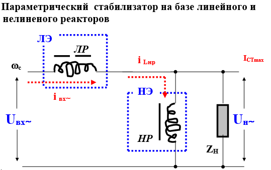
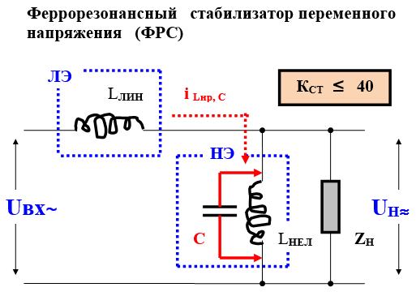
Достоинства: простота, надёжность, отсутствие полупроводниковых ключей, устойчивость к перегрузкам. Недостатки: большие масса и габариты, низкий \(\cos\varphi\) (у схемы ЛР+НР), нелинейные искажения, зависимость от частоты сети.
Источники электроснабжения переменного и постоянного тока
30. ХИТ: преобразование химической энергии; достоинства и недостатки; области применения
ХИТ — устройство, в котором химическая энергия активных веществ непосредственно превращается в электрическую. В свинцово-кислотном аккумуляторе:
$$Pb+PbO_2+2H_2SO_4\rightleftharpoons 2PbSO_4+2H_2O$$- \(Pb\)
- — свинец (активная масса отрицательного электрода).
- \(PbO_2\)
- — диоксид свинца (активная масса положительного).
- \(H_2SO_4\)
- — серная кислота (электролит).
- \(PbSO_4\)
- — сульфат свинца (продукт разряда).
- \(H_2O\)
- — вода (продукт разряда).
При разряде химическая энергия → электрическая; при заряде — наоборот. Одноразовые — без повторного заряда; многоразовые — 500–1000 циклов.
Достоинства: длительная отдача энергии, стабилизация напряжения на пологом участке, буферный режим. Недостатки: ограниченный срок службы, газовыделение (у кислотных), контроль заряда, температурный диапазон, саморазряд, масса.
Кислотные — дешёвые, малое внутреннее сопротивление, буферный режим 48 В. Щелочные — низкие температуры, но большой разброс \(1{,}0\ldots1{,}8\) В/эл, в буферном режиме не применяются. Литиевые — максимальная удельная энергия, требуют BMS.
31. Принципы построения СЭП средств связи
- Два независимых ввода от двух ТП.
- АВР — переключение на резервный ввод.
- ДГУ — третий независимый источник для особой группы.
- ЩПТА — щит переменного тока автоматизированный.
- Выпрямительные модули — 48 В, параллельно с резервом 20–30 %.
- АБ — буферный источник.
- Инвертор — 220 В для аппаратуры переменного тока.
- DC/DC-конвертор — дополнительные градации.
- Контроллер — управление, мониторинг.
- СВ и К — вентиляция и кондиционирование.
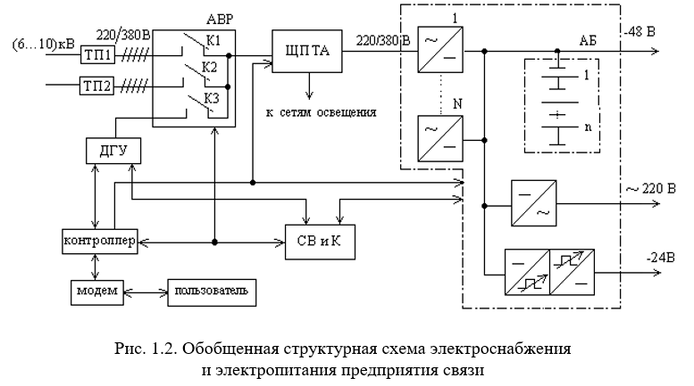
Ключевые принципы: эффективность (КПД, \(\cos\varphi\approx1\)); гарантированное и бесперебойное питание; надёжность; модульность; модернизация и мониторинг.
32. Гарантированное и бесперебойное электропитание; агрегаты
Гарантированное — за счёт двух вводов и ДГУ. Бесперебойное — за счёт АБ и инвертора. АБП: аккумуляторные батареи, кинетические накопители, суперконденсаторы, ДГУ, инверторы.
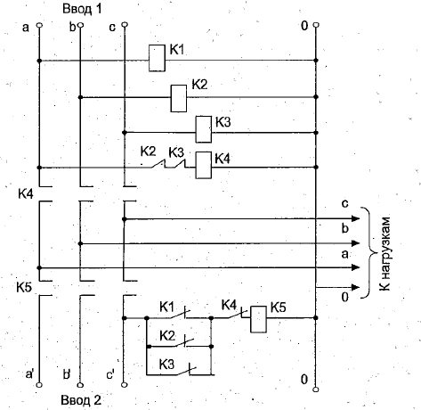
Типы АВР: электромеханические (0,6–0,8 с, обслуживание); полупроводниковые (3–10 мс); ТКИ (≤1 мс).
33. Коэффициент мощности предприятия связи
$$K_м=\frac{P}{S},\qquad S=UI,\qquad S=\sqrt{P^2+Q^2}$$- \(K_м\)
- — коэффициент мощности (0…1).
- \(P\)
- — активная мощность, Вт.
- \(S\)
- — полная мощность, В·А.
- \(Q\)
- — реактивная мощность, вар.
- \(U, I\)
- — действующие значения напряжения (В) и тока (А).
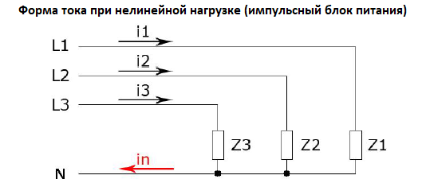
Почему \(K_м\to1\): при реактивных/нелинейных токах \(S>P\), линия загружается, растут потери \(\Delta P=I^2R\), возможна перегрузка нейтрали (токи 3-й гармоники). Норматив: \(K_м\ge0{,}95\) для оборудования до 16 А на фазу (IEC 61000-3-2, ГОСТ Р 51317.3.2-2001). Современные ЭПУ с ККМ дают \(K_м\approx0{,}99\). Для управляемых выпрямителей \(K_м=\gamma\cos\varphi\); при глубоком регулировании \(K_м\) падает до 0,3–0,5.